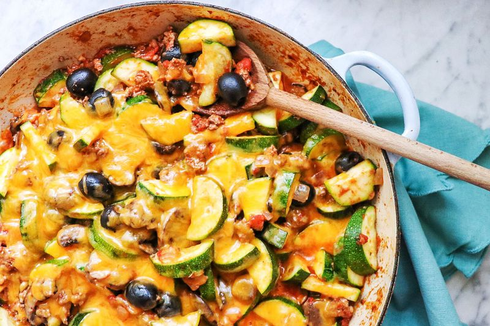

Zucchini

Zucchini and ground beef skillet
This ground beef, zucchini, and cheese skillet is my wife's favorite meal. It's a flavorful blend of ground beef, vegetables, and your favorite cheese that will satisfy your whole family!
Ingredients needed
- 1 pound lean ground beef
- 1 medium sweet onion, finely diced
- 1 (14.5 ounce) can Italian-style stewed tomatoes
- 1 (8 ounce) package sliced white mushrooms
- 1 (6.5 ounce) can tomato sauce
- 1 (6 ounce) can sliced black olives
- 2 cloves garlic, minced
- salt and ground white pepper to taste
- 4 medium zucchini
- 1 (8 ounce) package shredded sharp Cheddar cheese
Steps
- Heat a large skillet over medium-high heat. Cook and stir beef and onion in the hot skillet until beef is browned and crumbly and onion is translucent, 5 to 7 minutes. Drain and discard grease.
- Crush stewed tomatoes into smaller pieces in a bowl, then pour into the skillet. Stir in mushrooms, tomato sauce, olives, garlic, salt, and pepper. Let simmer, uncovered, until liquid reduces, 20 to 30 minutes.
- Slice zucchini lengthwise, then cut crosswise into 1/2-inch slices. Add zucchini to beef mixture; cover and cook until zucchni is firm yet tender to the bite, 5 to 7 minutes. Stir in Cheddar cheese; cover and cook until melted, 3 to 4 minutes.
More recipes